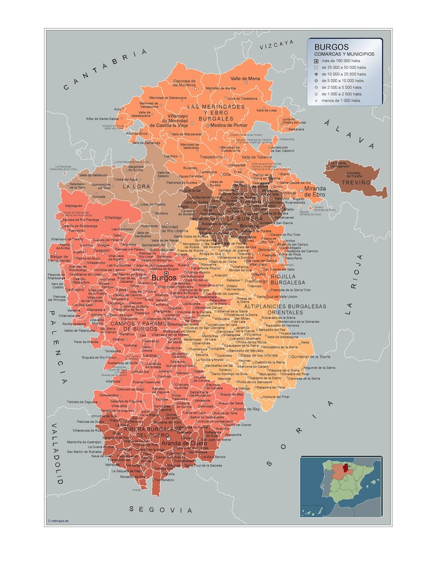
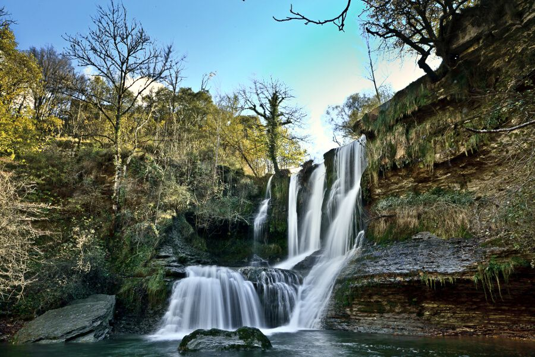
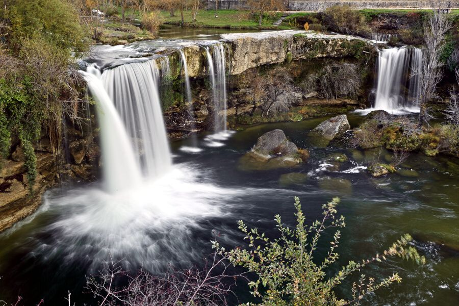
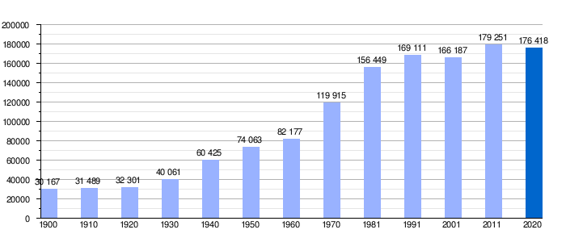

Ir a Zamora
Ir a Salamanca
Ir a leon
Ir a Valladolid
Ir a Palencia
Ir a Soria
Ir a Segovia
Ir a Ávila
LOCALIZACIÓN
La ciudad de Burgos se ubica en el centro de la provincia de Burgos, a 244 km al norte de Madrid, en la comunidad autónoma española de Castilla y León. Las coordenadas de la ciudad son latitud 42° 20' 57,1" N y longitud 3° 41' 4,7" O. Su término municipal tiene una extensión de 107,08 km² y se encuentra a 856 msnm (metros sobre el nivel del mar) según el Instituto Geográfico Nacional, llegando a una altitud de 932 msnm en el vértice geodésico del cerro de San Miguel, que preside la ciudad.
Su privilegiada situación, aproximadamente en el centro del norte peninsular, la sitúa como ciudad de paso obligado de la meseta hacia País Vasco y Francia, además de suponer el punto de partida de dos de los principales accesos a Cantabria.
Se sitúa a 91 kilómetros de Palencia, 114 kilómetros de Logroño, a 115 kilómetros de Vitoria, a 127 kilómetros de Valladolid, a 142 kilómetros de Soria, a 162 kilómetros de Santander, a 197 kilómetros de Segovia y a 244 kilómetros de Madrid.
VOLVER ARRIBA
LOCALIDADES PRINCIPALES
A cotinuación se muestra un mapa interactivo de la provincia de Burgos. Si clicamos en los nombres nos redirigira a la web oficial de cada zona 
VOLVER ARRIBA
GEOGRAFÍA
Situada en una zona de baja montaña, se encuentra en la zona de confluencia del río Arlanzón y varios de sus afluentes.
La ciudad es prácticamente llana en las zonas más pobladas, que se extienden principalmente en la vega formada por los ríos Arlanzón y Vena. A pesar de ello, su término municipal incluye zonas de baja montaña, las cuales en su mayoría se tratan de cerros que no superan los 80 metros de elevación sobre el nivel de la llanura.
El centro de la ciudad está situado a una altitud de 859 metros sobre el nivel de mar, mientras que la altitud del municipio varía desde los 827 metros en el último tramo del río Arlanzón en el municipio, hasta los 997 metros al norte, en Las Lomas.
PICO MÁS ALTO
Castro Valneraa es una montaña de la cordillera Cantábrica, en el límite entre las provincias españolas de Burgos y Cantabria. Tiene una altitud de 1718 metros sobre el nivel del mar.
Ubicada en el sector oriental de la cordillera Cantábrica, conocido como La Montaña Pasiega o los Montes de Pas, se yergue entre los puertos —o «portillos», como son conocidos en la zona— de Lunada y de las Estacas de Trueba. Su lado sur pertenece a la comarca de Las Merindades, en la provincia de Burgos, Castilla y León, mientras que su lado norte pertenece a la Comarca de los Valles Pasiegos, en Cantabria.

source:https://es.wikipedia.org/wiki/Castro_Valnera#/media/Archivo:Cara_norte_del_Castro_Valnera
{kind=link}
VOLVER ARRIBA
HISTORIA
El siglo xvi supuso para Burgos el siglo de su plenitud. Hacia finales del siglo xv y comienzos del siglo xvi, la ciudad, que había nacido sobre un medio agrícola, vuelve las espaldas al campo y se dedica a funciones polarizadas en torno al comercio. Es durante el siglo xvi cuando Burgos explota al máximo las ventajas de su situación geográfica.
En la ciudad se legalizó la conquista militar de Navarra por Castilla, ya que el duque de Alba informó de este suceso el 11 de junio de 1515 en las Cortes Castellanas reunidas en la ciudad.
A finales del siglo xvi se inició un periodo de decadencia de la ciudad. Las principales causas no fueron exclusivamente internas, pues alcanzaron una categoría superior: las guerras de Flandes, el descubrimiento de América y el centralismo de los monarcas absolutos, agravado con las circunstancias del traslado de la capital a Madrid, entre otras.
La Guerra de la Independencia Española afectó especialmente a la economía castellana. Las cosechas de 1811 y 1812 fueron malas y escasas debido a la incertidumbre que sentían los agricultores ya que los ejércitos y las guerrillas se aprovisionaron sobre el terreno mediante requisas. La falta de subsistencia extendió el hambre y provocó una intensa crisis de mortandad en 1812. No solo cayó la producción agrícola, hubo industrias que casi desaparecieron como la textil lanera de Castilla, ya que los rebaños de ovejas merinas sirvieron para alimentar a las tropas.
Este documental nos contará algo más en profundidad la historia de Burgos.

VOLVER ARRIBA
CULTURA
En la ciudad se encuentra la librería más antigua de España en funcionamiento, aunque el local actual que data de la década de 1960 no se corresponde con el original. Fue fundada en el año 1850 por Santiago Rodríguez y además fue también en su momento una imprenta y una editorial con el lema «La escuela redime y civiliza»
Auditorio y Palacio de Congresos
Fue inaugurado el 19 de septiembre de 2012 por la reina Sofía, con la interpretación musical y coral de la 9.ª Sinfonía de Beethoven y el Himno a Burgos. Forma parte del Complejo de la Evolución Humana, es el edificio de mayor presupuesto y tamaño.
Esta infraestructura cultural está llamada a convertirse en uno de los puntos de celebración de congresos y eventos más importante del norte de España. Su privilegiada situación, en pleno centro de la ciudad, y la disponibilidad de un aparcamiento subterráneo de 1400 plazas, dotarán de gran valor al complejo.
Gastronmia
La gastronomía burgalesa tiene como platos típicos platos de carne y legumbre principalmente. Cabe destacar la morcilla y el queso de Burgos como platos típicos de la ciudad al igual que en la provincia. También tienen especial protagonismo el cordero asado, la sopa castellana, la sopa burgalesa y las alubias o caparrones, especialidades destacadas de la ciudad.
Pero sin duda el plato más famoso de la ciudad es el llamado olla podrida, que es un cocido de alubias, morcilla, chorizo, costilla, panceta y otro productos cárnicos procedentes del cerdo. Entre los postres más tradicionales, destacan las yemas de Burgos, o el postre del abuelo, formado a base de queso de Burgos y miel.
VOLVER ARRIBA
NATURALEZA
Valles, llanuras y montañas se suceden a lo largo y ancho de la provincia de Burgos, un territorio que acoge dentro de sus fronteras una enorme variedad geográfica. Esta grandeza paisajística esconde lugares de los que disfrutar despacio: bosques de ribera que acompañan a ríos y arroyos, cañones y barrancos modelados por la acción del agua sobre la roca caliza, saltos de agua, pastizales, campos de cultivo que cambian de color durante el año…
 
Además, la provincia de Burgos cuenta con ocho espacios protegidos: cuatro parques naturales (Lagunas Glaciares de Neila, el Cañón de Río Lobos, las Hoces del Alto Ebro y Rudrón y los Montes Obarenes – San Zadornil), un geoparque (Las Loras), dos monumentos naturales (Ojo Guareña y Monte Santiago) y el Espacio Natural La Yecla y los Sabinares del Arlanza. Todos ellos son destinos ideales para disfrutar de la naturaleza en cualquiera de sus formas y practicar todo tipo de actividades al aire libre.
Si te interesa le adjuntamos un video de la naturaleza de Burgos;https://www.youtube.com/watch?v=SIkIaA4ISIsVOLVER ARRIBA
TRADICIONES
Festival Internacional de Folclore «Ciudad de Burgos»
Desde 1977, de forma ininterrumpida, se viene celebrando este festival que convierte el verano burgalés en un atractivo punto de encuentro de las culturas del mundo.
Participan en él grupos internacionales, nacionales, regionales y locales. Es una muestra no competitiva de periodicidad anual con muestras de canciones, músicas y danzas de los pueblos del mundo dedicada a la exhibición de bailes y músicas tradicionales por grupos de folclore, estrechando lazos de amistad entre los mismos y los pueblos, favoreciendo la comprensión en el campo de las tradiciones y de las artes populares, dando a conocer la diversidad cultural. Los grupos participantes realizan pasacalles y desfiles por plazas y calles, animaciones folclóricas, mercadillos de artesanía, exposiciones, talleres de danzas, recitales de músicas y las actuaciones y conciertos. Han pasado por el 620 grupos representando a 92 naciones y más de 21 370 participantes.
Este festival se ha convertido en el referente cultural del verano. Se suele celebrar durante la tercera semana del mes de julio, al aire libre, en la Plaza de San Juan. Durante cinco días Burgos se convierte en el centro universal de la paz, la tolerancia, la diversidad, la integración y las culturas.
Noche Blanca
El Instituto Municipal de Cultura y Turismo del Ayuntamiento de Burgos pone en marcha por primera vez la Noche Blanca de Burgos el 17 de mayo de 2008, eligiendo esta fecha como víspera a la celebración de la Romería de la Virgen Blanca.
La Noche Blanca de Burgos pretende ser una manifestación cultural gratuita y abierta a todos los ciudadanos que se celebra en numerosos espacios de uso público, tanto abiertos como cerrados. Parques, plazas, calles, teatros, centros de creación artística, museos y el patrimonio histórico de la ciudad serán visitados por artistas de una forma original con propuestas originales para una Noche Blanca. Es una noche de artistas invadiendo las calles y espacios e instituciones de acceso restringido se abren a los ciudadanos. La hostelería de la ciudad también abre sus puertas con sugerencias para la Noche Blanca de Burgos.
source:https://es.wikipedia.org/wiki/Burgos#/media/Archivo:Cid_Noche_Blanca.JPG
{kind=link}
VOLVER ARRIBA
OTROS ASPECTOS
DemografíaLa población de la ciudad ha experimentado un incremento considerable desde principios del siglo xx, sobre todo después de la guerra civil, y especialmente entre 1950 y 1980, debido en parte a un fuerte proceso de industrialización producido al ser nombrada Polo de Desarrollo Industrial. El único decremento de población se produjo en los años 90, debido a la crisis y a la migración de parte de la población a municipios del área metropolitana y del alfoz, marcando un mínimo de 161 984 habitantes en 1998. En el año 2012 se marcó un dato histórico demográfico, con 179 906 habitantes.
VOLVER ARRIBA